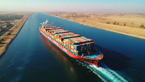
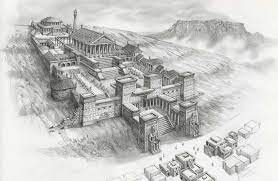
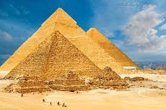
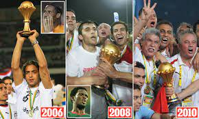

الإنجازات المصرية التي لا تقارن بأي شئ
قناة السويس

قناة السويس هي ممر مائي اصطناعي ازدواجي المرور في مصر، يبلغ طولها 193.3 كم
،وتصل بين البحرين الأبيض المتوسط والأحمر، وتنقسم طولياً إلى قسمين شمال وجنوب البحيرات المرّة
،وعرضياً إلى ممرين منفصلين في أغلب أجزائها لتسمح بعبور السفن في اتجاهين في نفس الوقت بين كل من أوروبا وآسيا
.وتعتبر أسرع ممر بحري بين القارتين وتوفر نحو 15 يوماً في المتوسط من وقت الرحلة عبر طريق رأس الرجاء الصالح
،بدأت فكرة إنشاء القناة عام 1798 مع قدوم الحملة الفرنسية على مصر
،ففكر نابليون في شق القناة إلا أن تلك الخطوة لم تكلل بالنجاح
،وفي عام 1854 استطاع دي لسبس إقناع محمد سعيد باشا بالمشروع وحصل على موافقة الباب العالي
.فقام بموجبه بمنح الشركة الفرنسية برئاسة دي لسبس امتياز حفر وتشغيل القناة لمدة 99 عام
،استغرق بناء القناة 10 سنوات (1859 - 1869)، وساهم في عملية الحفر ما يقرب من مليون عامل مصري
.مات منهم أكثر من 120 ألف أثناء عملية الحفر نتيجة الجوع والعطش والأوبئة والمعاملة السيئة
.وتم افتتاح القناة عام 1869 في حفل مهيب وبميزانية ضخمة
.وفي عام 1905 حاولت الشركة الفرنسية تمديد حق الامتياز 50 عاماً إضافية إلا أن تلك المحاولة لم تنجح مساعيها
،وفي يوليو عام 1956 قام الرئيس عبد الناصر بتأميم قناة السويس
والذي تسبب في إعلان بريطانيا وفرنسا بمشاركة إسرائيل الحرب على مصر
.ضمن العدوان الثلاثي والذي انتهى بانسحابهم تحت ضغوط دولية ومقاومة شعبية
مكتبة الإسكندرية

،اختلف المؤرخون حول الشخص الذي بنى المكتبة
،فمنهم من يقول أن الإسكندر وضعها في تخطيطه عند بناء الإسكندرية وهو صاحب فكرة بنائها
بينما يعتقد أخرون أن بطليموس الأول هو من بناها والبعض الآخر يقول أنه أسست على يد بطليموس الثاني
باعتبار أنه من أكملها فبطلميوس الأول هو الذي أمر بتأسيس المكتبة وتنظيمها
على نفقته، ثم أكمل ذلك خلفه بطليموس الثاني.
،جمع ديمتريوس الفاليري اليوناني نواة مكتبة الإسكندرية
وهو في بلاد اليونان، الذي كان يعمل كمستشار لبطليموس الأول وهو من نظم المكتبة
،تم وضع تخطيطا معماريا وموضوعيا بحيث تكون معبرةً عن رصيد الفكر اليوناني وعلوم العصر
وهناك اختلاف في العام الذي تم إنشائها فيه فهناك من يقول
.أنها أنشئت في عام 330 قبل الميلاد وهناك من يقول أنه تم إنشائها عام 288 قبل الميلاد
مجمع أهرامات الجيزة

،مجمع أهرامات الجيزة (يُطلق عليه أيضًا اسم مقبرة الجيزة)
،هو موقع أثري على هضبة الجيزة في القاهرة الكبرى في مصر
يضم المجمع كل من الهرم الأكبر وهرم خفرع وهرم منقرع جنبًا إلى جنب مع المجمعات الهرمية
المرتبطة بها وتمثال أبو الهول.بنيت هذه الأهرامات جميعها في عهد الأسرة الرابعة للمملكة القديمة
.في مصر القديمة بين عامي 2600 و 2500 قبل الميلاد. كما يضم الموقع عدة مقابر وبقايا قرية عمالية
يقع المجمع على أطراف الصحراء الغربية على بعد حوالي 9 كيلومترات غرب نهر النيل
.في مدينة الجيزة، وحوالي 13 كيلومترًا جنوب غرب وسط مدينة القاهرة
.أدرج الموقع (إلى جانب مدينة منف) المجاورة في قائمة اليونسكو للتراث العالمي في عام 1979
سد أسوان العالي

،سد أسوان العالي أو السدّ العالي هو سد مائي على نهر النيل في جنوب مصر
.أنشئ في عهد جمال عبد الناصر وقد أسهم السوفييت في بنائه
،تملكه وتُشغله الهيئة العامة للسد العالي وخزان أسوان
وقد ساعد السد كثيراً في التحكم على تدفق المياه والتخفيف من آثار فيضان النيل. يستخدم لتوليد الكهرباء
،في مصر. طول السد 3600 متر، عرض القاعدة 980 متر
.عرض القمة 40 مترا، والارتفاع 111 متر
،حجم جسم السد 43 مليون متر مكعب من إسمنت وحديد ومواد أخرى
.ويمكن أن يمر خلال السد تدفق مائي يصل إلى 11,000 متر مكعب من الماء في الثانية الواحدة
.بدأ بناء السد في عام 1960 وقد قدرت التكلفة الإجمالية بمليار دولار شطب ثلثها من قبل الاتحاد السوفييتي
.عمل في بناء السد 400 خبير سوفييتي وأكمل بناؤه في 1968
.ثبّت آخر 12 مولد كهربائي في 1970 وافتتح السد رسمياً في عام 1971
ولكن أدى السد العالي إلى تقليل خصوبة نهر النيل وعدم تعويض المصبات في دمياط
ورأس البر بالطمي مما يهدد بغرق الدلتا بعد نحو أكثر من مائة عام
وبسبب بعض العوامل الأخرى مثل الاحتباس الحراري وذوبان الجليد بالقطبين الشمالي والجنوبي
.بتأثير سلبي من طبقة الأوزون. وتجدر الإشارة هنا إلى أن أول من أشار إلى بناء هذا السد هو العالم العربي المسلم الحسن بن الحسن
.والذي لم تتح له الفرصة لتنفيذ فكرته وذلك بسبب عدم توفر الآلات اللازمة لبنائه في عصره
فوز كأس الامم الأفريقية ثلاث مرات على التوالي

حققت المنتخب المصري لكرة القدم إنجازًا تاريخيًا
.بفوزه بكأس الأمم الأفريقية ثلاث مرات متتالية في 2006 و2008 و2010
.هذا الإنجاز غير المسبوق عزز هيمنة مصر في كرة القدم الأفريقية وبرز قدرة البلاد على تحقيق التفوق في هذه الرياضة
.بدأت الرحلة في 2006 عندما استضافت مصر البطولة وحققت الفوز تحت قيادة المدرب حسن شحاتة
.تأهل الفريق إلى النهائي حيث واجه كوت ديفوار، وانتهت المباراة بفوز مصر بركلات الترجيح في نهائي مثير
.واصل الفريق نجاحه في 2008 في غانا، حيث هزم الكاميرون 1-0 في النهائي بفضل هدف حاسم من محمد
،أكمل الفراعنة سلسلتهم التاريخية في 2010 في أنغولا
،"حيث هزموا غانا مرة أخرى 1-0 في النهائي بهدف متأخر من محمد ناجي "جدو
،تميزت هذه الفترة الرائعة في كرة القدم المصرية بوجود وحدة دفاعية قوية
،تحكم استثنائي في خط الوسط، ونهاية فعالة. لعب اللاعبون الرئيسيون مثل أحمد حسن، عصام الحضري
.ومحمد أبو تريكة أدوارًا محورية في نجاح الفريق
،تبقى ألقاب كأس الأمم الأفريقية الثلاثة المتتالية لمصر رقماً قياسياً
.مما يبرز التميز الكروي للبلاد وأثرها الكبير على مشهد كرة القدم الأفريقية